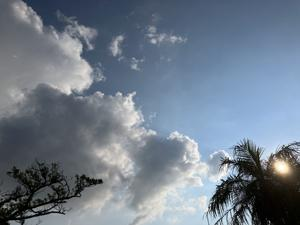
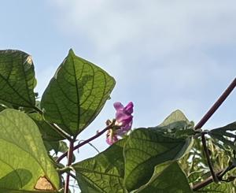
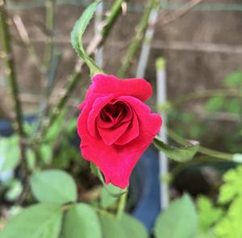

うるがいの話 ある日
最新: 漢字の話【うるがいの話 ある日】とは 一日だけのプログです
『うるがいの話』の最新一日だけのプログで、通信料が少なく経済的だ。カニの画像をクリックすると全ての日付が載る『うるがいの話』サイトを表示します
|
|
【うるがいの話】 うるがい(ｳﾙｶﾞｲ urugai)とは、『もずくがに』の名前でとても大きくなります。 |
|---|---|
|
|
【カミマヤーの話】 猫のことを方言でマヤーといいます。カミマヤー（kamimayaa）とは、神の猫のことです。 |
|
【たながぁの音楽】 たながぁ（ﾀﾅｶﾞｰ tanagaa）とは手長えびのことで、何種類かあり大きいのは車 エビぐらいになります。 |

|
【ぶながぁの話】 ぶながぁ(ﾌﾞﾅｶﾞｰ bunagaa)とは、赤い髪の毛、赤い身体、そして身長は１ｍ２０ｃｍ ぐらい、川の蟹を食べているの目撃された。場所は沖縄県国頭郡大宜味村のと ある村僕の隣近所に住んでいる爺さんから、聞いた話です。 |
|
|
【ギーマの話】 ギーマ(giima)とは、山原の里山に咲くスズランに似た、 花を付けます。実は食べられます、 気が付くと口の周りが紫になっています。 |
2024年08月12日 (月）漢字の話
15:54

【殊勝】しゅ‐しょう
１ とりわけすぐれているさま。格別。
「相談したれど別に―なる分別も出でず」〈露伴・五重塔〉
２ 心がけや行動などが感心なさま。けなげであるさま。
「親に心配をかけまいとする殊勝な気持ち」「いやに殊勝なことを言う」
３ 神々しいさま。心打たれるさま。
近頃、読書やテレビの字幕で【殊勝】の漢字を頻繫に見かけた、やむなく調
べることにした。還暦過ぎても、分からないのは分からないのである。ちな
みにヨメに知っている？と聞いたら、知っていた。
ふじまめ（藤豆）、そらまめ（空豆）、唐豆(とうまめ)と、ついでに薔薇も  
まだ２０００年になる前のとあるプロジェクトで、システムの全体図を作成
した。それを見た人が『俯瞰図』としきりに言った。ホー、俯瞰図というの
かと。２００９年７月、某資格試験の研修でテキストに晒す（さらす）とい
う漢字が頻発、読み方も知らなかった。さらすと書いてよね、そうしたら分
かるのにと思った。
１９４８年年１月１日戸籍法が改正され子供の名づけは当用漢字１８５０字
に制限されました。この時点で、新字の「晒」も旧字の「曬」も、子供の名
づけに使えなくなってしまったのです。
半世紀後の２０００年１２月８日、国語審議会は表外漢字字体表を答申しま
した。表外漢字字体表は、常用漢字（および当時の人名用漢字）以外の漢字
に対して、印刷に用いる字体のよりどころを示したもので、１０２２字の印
刷標準字体が収録されていました。この中に、新字の「晒」が含まれていま
した。
フムフム、ところで左手首は完治かな。
１５時４５分 ビットコインの総資産 ￥２４、８９８（↓１、０８１！）